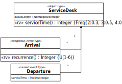
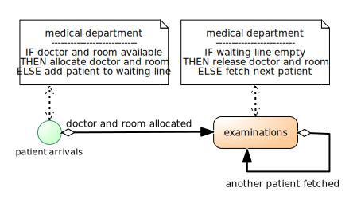

Modeling resource-constrained activities has been a major issue in DES since the 1960'ies, while it has been neglected in BPM(N).
In process simulation with DES tools, queuing (of planned activities waiting for the availability of resources) has always been an important issue, while BPM(N) does hardly consider it.
GPSS and SIMAN/Arena have pioneered the M&S of queuing/processing networks.
GPSS has introduced the modeling pattern Seize-Delay-Release for resource-dependent processing activities.
What's wrong with BPMN?
Insufficient integration of the objects that participate in a process
Insufficient support of resource-constrained activities
No support of processing activities
Underdetermined/ambiguous meaning of sequence flow arrows
No convincing formal semantics
Ontological Principles (1)
There are two main categories: objects ("endurants") and events ("perdurants").
Objects participate in events.
Actions and activities are events that are performed by an agent.
Activities are composite events composed of at least a start and an end event with a duration greater than zero.
Ontological Principles (2)
Processes are governed by causal regularities, which relate events with (1) state changes of affected objects and (2) follow-up events.
A discrete process consists of a partially ordered set of events that happen in a spatio-temporal region determined by the events' participants and the causal regularities involved.
A business process is a discrete process that "happens in the context of an organization".
Implications for Modeling (1)
Since events depend on objects, we first need to model object types and then event types.
A process model that does not model the participating objects is incomplete!
A process model is based on an underlying information model, which defines the types of objects and events involved in the process model.
A conceptual process model describes the causal regularities of a real world process.
Implications for Modeling (2)
A simulation design model consists of an information design model and a process design model.
An information design model defines object types and event types (e.g., in the form of classes in a Class Diagram).
A process design model defines event rules that represent causal regularities (e.g., in a DPMN Process Diagram).
DPMN =
Event Graphs with BPMN's Conditional Sequence Flow arrows +
Exclusive/Inclusive/Parallel Gateways for conditional/parallel branching
Data Objects for replacing "state variables" (like Q) with attributes (like ServiceDesk::queueLength)
Activities composed of a Start and End event
Resource-Dependent Event Flow arrows
Object Flow arrows
An Event Graph with Conditional Sequence Flow Arrows
OEM&S: Modeling Object and Event Types

DPMN: Using Objects instead of State Variables
The model specifies two event rules: one for Arrival events and one for Departure events.
Event Rules
ON (event type)
DO (event routine)
Arrival( sd) @ t
with sd : ServiceDesk
INCREMENT sd.queueLength
IF sd.queueLength = 1 THEN
sTime := ServiceDesk.serviceTime()
SCHEDULE Departure( sTime, sd) @(t + sTime)
Departure( sd) @ t
with sd : ServiceDesk
DECREMENT sd.queueLength
IF sd.queueLength > 0 THEN
sTime := ServiceDesk.serviceTime()
SCHEDULE Departure( sTime, sd) @(t + sTime)
Introducing Activities as Paired Start/End Events
Introducing Activities as Paired Start/End Events
Modeling Resources in an Information Model
A Conceptual Model of a Resource-Dependent Activity

Using a Resource-Dependent Event Flow Arrow
The new symbol of a Resource-Dependent Event Flow Arrow implicitly expresses the resource management logic of queuing a planned activity if the required resources are not available.